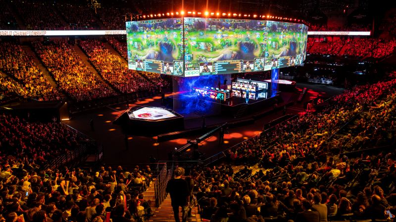
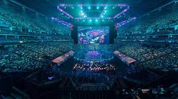
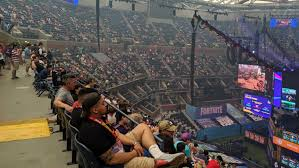

1. League of Legends World Championship
The League of Legends World Championship is the annual professional tournament organized by Riot Games. It features the best teams from around the world competing for the title of world champion. The event is known for its high viewership, with millions of fans tuning in to watch the exciting matches.
2. The International (Dota 2)
The International is the premier tournament for Dota 2, organized by Valve Corporation. It has the largest prize pool of any esports event, attracting the best teams from around the globe. The tournament is celebrated for its intense competition and massive online viewership.
3. Fortnite World Cup
The Fortnite World Cup is an annual competition hosted by Epic Games, featuring the best Fortnite players from around the world. The event is widely watched and garners a huge online audience, making it one of the most viewed esports events globally.